| 陆军科技 | 海军科技 | 空军科技 | 电子与工业 |
|---|---|---|---|
无
|
|
没有
|
|
| 陆军学说 | 海军学说 | 空军学说 |
|---|---|---|
|
|
「无」 |
原页面：United Kingdom
The  英国 (UK), also known as 大不列颠, is a major country in Western Europe with a population of 45.02 M (core), and another 75.65 M (non-core). In 1939, the UK honoured its guarantees to
英国 (UK), also known as 大不列颠, is a major country in Western Europe with a population of 45.02 M (core), and another 75.65 M (non-core). In 1939, the UK honoured its guarantees to  波兰 by declaring war on
波兰 by declaring war on  德国. After the fall of
德国. After the fall of  法国, the United Kingdom was the only Allied nation left in Europe until
法国, the United Kingdom was the only Allied nation left in Europe until  意大利's surprise invasion of
意大利's surprise invasion of  希腊 led the Greeks to fully join the Allies. It remained the only one of the "Big Three" (Great Britain, the Soviet Union, and the United States) and Allied major power in the war from the fall of France until 1941 when the German Reich invaded the
希腊 led the Greeks to fully join the Allies. It remained the only one of the "Big Three" (Great Britain, the Soviet Union, and the United States) and Allied major power in the war from the fall of France until 1941 when the German Reich invaded the  苏联. The United Kingdom was heavily engaged in the Western European, Atlantic, Mediterranean, African, and Southeast Asian theaters.
苏联. The United Kingdom was heavily engaged in the Western European, Atlantic, Mediterranean, African, and Southeast Asian theaters.
After the dust settled in Europe following Napoleon's short-lived reign the United Kingdom emerged as a global power, integrating Ireland into the Union and establishing a new continental order. The independence of the Thirteen Colonies forced the empire to shift its focus eastward and, after taking Dutch possessions during the Napoleonic Wars (and handing over the non-African territories back to the Dutch), the British Empire now controlled India, Egypt, the Cape of Good Hope and the straits of Singapore. These new possessions were vital to British control of global trade and only furthered Britain's rapid industrialisation. This new empire, larger than any before it, combined with a huge level of indirect control globally and the largest navy in existence, led the United Kingdom to take its place as the most powerful industrial empire in history resulting in the "Pax Britannica" (latin for "British Peace"): an informal era of 99 years from 1815 to 1914 in which the European balance of power, despite various smaller armed conflicts, remained largely uninfluenced on the Home Islands during major wars.
However, the rise of the German Empire would challenge the British. The ascension of Wilhelm II to the throne of Germany would turn Germany's huge industrial capacity and military against the British, with an aggressive foreign policy and a naval arms race between the two empires. In the British Parliament debates raged as to whether the empire should maintain neutrality or actively intervene to ensure the continuation of British dominance; Parliament chose the latter when Belgium was invaded by German forces in 1914. Britain's entry into the First World War helped secure an Entente victory, especially with the arrival of the US Army into the war in late 1917; however, the Pax Britannica was nothing more than an informal state of world politics by this point. Russia had fallen to communism, Germany and Italy to fascism, and the Japanese Empire slowly diminished British influence in the east. With the massive costs of the First World War and the loss of Ireland, Britain was in no shape for a new war, let alone its people.
Due to its situation, a division has arisen in Britain; one side calls for the maintenance of the Empire's status quo by avoiding war and making an ally of the Third Reich, while the other calls for the Empire to defend the continental order and stop both fascism and communism in their tracks. The UK's Home army is experienced but small and its colonial forces are smaller, inexperienced and underequipped, and its navy, while numerous, is restricted by the London Naval Treaty, alongside the naval powers of the US, Japan, France and Italy, in respective order. The current conservative government calls for appeasement with the true intention of postponing a war with Germany until it has rearmed. More staunch interventionists under Churchill have called for an end to appeasement. Yet with a constitutional crisis, the birth of independence movements in colonies and the threat of Germany, Italy and Japan on all corners of the British Empire, many argue Britain's reign over the world has ended and it's better to preserve what the UK has rather than fight what doesn't concern it.
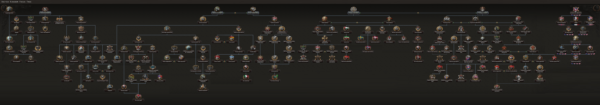
The British national focus tree can be divided into 5 main branches and 6 distinct sub-branches and 1 joint branch:
英国 开局拥有以下国家精神：
开局拥有以下国家精神：
The  英国 begins with 4 research slots available; 1 more can be unlocked through the national focus tree.
英国 begins with 4 research slots available; 1 more can be unlocked through the national focus tree.
| 陆军科技 | 海军科技 | 空军科技 | 电子与工业 |
|---|---|---|---|
无
|
|
没有
|
|
| 陆军学说 | 海军学说 | 空军学说 |
|---|---|---|
|
|
「无」 |
| 陆军科技 | 海军科技 | 空军科技 | 电子与工业 |
|---|---|---|---|
无
|
|
没有
|
未启用《抵抗运动》
|
| 陆军学说 | 海军学说 | 空军学说 |
|---|---|---|
|
|
|
The  英国 has a number of unique names and appearances for various technologies and equipment, listed here. Note that generic names are not listed.
英国 has a number of unique names and appearances for various technologies and equipment, listed here. Note that generic names are not listed.
| 类型 | 1918 | 1936 | 1938 | 1939 | 1940 | 1941 | 1942 | 1943 | 1944 |
|---|---|---|---|---|---|---|---|---|---|
| 支援武器 | Vickers MG & Stokes mortar | Lewis Mk. III DEMS & SBML two-inch mortar | Bren Mk. I & ML 3 inch mortar | Bren Mk. III & ML 4.2 inch Mortar | |||||
| 步兵装备 | Rifle No. 1 Mk III | Rifle No. 4 Mk I | Sten Mk II | Sterling Mk I | |||||
| 步兵反坦克 | Boys Anti-Tank Rifle | PIAT | |||||||
| 摩托化步兵 | Austin K5 | ||||||||
| 机械化 | Bren Carrier | Universal Carrier | Churchill Kangaroo | ||||||
| 两栖牵引车 | Terrapin | NA | |||||||
| 装甲车 |
Dingo | Humber | AEC |
| 科技年份 | 两栖 | 轻型（反坦克/自行火炮/防空） | 中型（反坦克/自行火炮/防空） | 现代（反坦克/自行火炮/防空） | 重型（反坦克/自行火炮/防空） | 超重型（反坦克/自行火炮/防空） |
|---|---|---|---|---|---|---|
| 1918 | Mark V | |||||
| 1934 | Vickers II (Deacon / Birch / Vickers II AA) | Vickers (NA / Gun Carrier Mk. I / NA) | ||||
| 1936 | Matilda (Valiant / Priest / Matilda AA) | |||||
| 1938 | Valentine DD | Crusader (Cavalier / Centaur / Crusader AA I) | ||||
| 1940 | Cromwell (Charioteer / Avenger / Crusader AA II) | Churchill (Churchill Gun Carrier / Churchill AVRE / Churchill AA) | ||||
| 1941 | Valentine (Archer / Bishop / Valentine AA) | Tortoise (Iron Duke / NA / NA) | ||||
| 1943 | Comet (Contentious / Sexton / Comet Marksman) | Black Prince (Hector / Black Prince AVRE / Black Prince Marksman) | ||||
| 1945 | Centurion (Centurion Malkara / Centurion AVRE / Centurion Marksman) | |||||
| 备注: Without 一步不退, Medium Tank I and II are unlocked one year later. Amphibious tanks are then unlocked in 1940 and 1942, the second one is called Cromwell DD. | ||||||
| 科技年份 | 防空炮 | 火炮 | 火箭炮 | 反坦克炮 |
|---|---|---|---|---|
| 1934 | QF 18-pounder | |||
| 1936 | QF 3-inch | QF 2-pounder | ||
| 1939 | QF 25-pounder | |||
| 1940 | QF 40 mm Bofors | RP-3 HE/GP | QF 6-pounder | |
| 1942 | BL 5.5-inch Medium Gun | |||
| 1943 | QF 3.7-inch | RP-3 HE/SAP | QF 17-pounder |
| 科技年份 | 近距空中支援（舰载） | 战斗机（舰载） | 海军轰炸机（舰载） | 重型战斗机 | 战术轰炸机 | 战略轰炸机 | 侦察机 | 运输机 |
|---|---|---|---|---|---|---|---|---|
| 1933 | Gladiator | Whitley | NA | AW.15 | ||||
| 1936 | Hector (Osprey) | Hurricane (Sea Gladiator) | Swordfish (Shark) | Blenheim | 惠灵顿 | Halifax | Spitfire PR | |
| 1940 | Typhoon (Skua) | Spitfire (Fulmar) | Albacore (Roc) | Beaufighter | Beaufort | Lancaster | Mosquito PR | Bristol Bombay |
| 1944 | Tempest (Sea Fury) | Spiteful (Firefly) | Barracuda (Firebrand) | Mosquito FB | Mosquito B | Lincoln | HP.67 | |
| 喷气发动机技术 | ||||||||
| 1945 | Meteor | Venom | ||||||
| 1950 | Vampire | Canberra | Valiant | |||||
The United Kingdom lies in Western Europe and consists of England,  威尔士,
威尔士,  苏格兰,
苏格兰,  北爱尔兰 and the Isle of Man. The United Kingdom also owns a lot of overseas territories and colonies around the world. This includes huge parts of Africa, Newfoundland and Labrador, Guyana and the Falklands and direct control of the strategic locations of Gibraltar,
北爱尔兰 and the Isle of Man. The United Kingdom also owns a lot of overseas territories and colonies around the world. This includes huge parts of Africa, Newfoundland and Labrador, Guyana and the Falklands and direct control of the strategic locations of Gibraltar,  Malta, and the Suez Canal. The United Kingdom directly borders
Malta, and the Suez Canal. The United Kingdom directly borders  爱尔兰 to the west, but is otherwise separated from European nations by seas. The North Sea lies to the North East, while the English Channel separates mainland Europe. To the west lies the Atlantic Ocean. The United Kingdom indirectly borders a lot of countries through overseas territories like
爱尔兰 to the west, but is otherwise separated from European nations by seas. The North Sea lies to the North East, while the English Channel separates mainland Europe. To the west lies the Atlantic Ocean. The United Kingdom indirectly borders a lot of countries through overseas territories like  加拿大 to the west, which borders Newfoundland and Labrador. It also borders
加拿大 to the west, which borders Newfoundland and Labrador. It also borders  西班牙 through Gibraltar, and
西班牙 through Gibraltar, and  法国和
法国和 意大利 through the African colonies. The United Kingdom is dominated by the Scottish highlands in the North. In the south hills, plains and urban areas dominate. The United Kingdom has a lot of urban areas including London, Manchester, Glasgow, and Liverpool.
意大利 through the African colonies. The United Kingdom is dominated by the Scottish highlands in the North. In the south hills, plains and urban areas dominate. The United Kingdom has a lot of urban areas including London, Manchester, Glasgow, and Liverpool.
The  英国 owns 19 core and 73 colonial states.
英国 owns 19 core and 73 colonial states.
| 州 | 城市 | 地形（省份数） | 区域 | 是否核心州 | ||
|---|---|---|---|---|---|---|
| 阿伯丁郡 | Aberdeen Dundee |
5 1 |
发达乡村区 | 745,466 | ||
| 阿布扎比 | 阿布扎比 Dubai |
1 0 |
牧区 | 170,200 | ||
| 亚历山大 | 亚历山大 Damietta El-Alamein Mansoura |
10 0 1 0 |
发达乡村区 | 3,859,239 | ||
| Andaman | Port Blair | 1 | 小岛 | 29,500 | ||
| Ascension | – | – | 微型岛屿 | 458 | ||
| 阿斯旺 | 阿斯旺 Asyut Luxor Qena Sohag |
1 1 3 0 0 |
乡村区 | 4,224,516 | ||
| Bahr al Ghazal | – | – | 牧区 | 550,000 | ||
| 巴林 | Manama | 2 | 牧区 | 89,970 | ||
| Barotseland | Mongu | 1 | 乡村区 | 690,043 | ||
| Bechuanaland | Gaborone | 1 | 荒地 | 234,000 | ||
| Benue | Enugu | 2 | 牧区 | 1,163,674 | ||
| 百慕大 | Hamilton | 1 | 小岛 | 37,516 | ||
| Blue Nile | – | – | 牧区 | 661,102 | ||
| Borno | – | – | 牧区 | 166,240 | ||
| 英属圭亚那 | Georgetown | 1 | 牧区 | 309,000 | ||
| British Honduras | Belize City | 1 | 牧区 | 51,000 | ||
| British Somaliland | Berbera Hargeisa |
1 1 |
飞地 | 344,700 | ||
| 开罗 | Beni Suef 开罗 Faiyum Giza |
3 20 0 5 |
发达乡村区 | 6,454,865 | ||
| Ceylon | Trincomalee | 3 | 乡村区 | 5,500,000 | ||
| 圣诞岛 | – | – | 微型岛屿 | 1,625 | ||
| 科科斯群岛 | – | – | 微型岛屿 | 42 | ||
| Cumbria | Carlisle | 3 | 发达乡村区 | 745,101 | ||
| 塞浦路斯 | Limassol Nicosia |
3 5 |
乡村区 | 347,959 | ||
| 迪戈加西亚 | – | – | 微型岛屿 | 2,147 | ||
| 东盎格利亚 | Ipswich Norwich |
2 3 |
城市区 | 1,363,174 | ||
| 东米德兰兹 | Leicester Nottingham |
3 10 |
城市区 | 2,212,021 | ||
| 东部沙漠 | Berenice Troglodytica Hurghada |
0 1 |
荒地 | 2,194 | ||
| 埃利斯群岛 | – | – | 微型岛屿 | 493 | ||
| 福克兰群岛 | Port Stanley | 1 | 飞地 | 2,463 | ||
| Fiji | 苏瓦 苏瓦 | 1 0 |
小岛 | 180,000 | ||
| Gambia | Banjul | 1 | 飞地 | 199,520 | ||
| 加里萨 | – | – | 牧区 | 610,560 | ||
| 加纳 | Accra Kumasi |
2 1 |
乡村区 | 3,163,600 | ||
| 直布罗陀 | 直布罗陀 | 10 | 飞地 | 21,372 | ||
| 吉尔伯特群岛 | Tarawa | 1 | 小岛 | 1,035 | ||
| 格洛斯特郡 | Bristol | 5 | 城市区 | 1,800,615 | ||
| 大伦敦地区 | London | 50 | 特大都市区 | 9,824,296 | ||
| 香港 | 香港 | 3 | 稀疏城市区 | 1,143,516 | ||
| Isle of Man | Douglas | 1 | 小岛 | 51,000 | ||
| Jamaica | Kingston | 1 | 发达乡村区 | 1,075,000 | ||
| 卡萨拉 | Halayeb Port Sudan Tokar |
0 1 0 |
乡村区 | 511,402 | ||
| Khartoum | Atbara Khartoum Wadi Halfa |
0 3 0 |
乡村区 | 821,003 | ||
| Kurdufan | – | – | 乡村区 | 1,802,132 | ||
| Labrador | – | – | 荒地 | 22,179 | ||
| Lagos | Lagos | 5 | 乡村区 | 19,757,000 | ||
| 拉纳克 | Dumfries Glasgow |
1 15 |
城市区 | 2,257,723 | ||
| 兰开夏 | Liverpool Manchester |
30 5 |
大都市区 | 5,770,454 | ||
| Leeward Islands | – | – | 微型岛屿 | 25,678 | ||
| 洛锡安 | Edinburgh Rosyth |
10 1 |
城市区 | 1,431,624 | ||
| 马拉维 | Lilongwe | 1 | 牧区 | 1,603,975 | ||
| Maldives | Malé | 1 | 飞地 | 79,300 | ||
| Malta | Valletta | 5 | 小岛 | 241,621 | ||
| 马特鲁 | Marsa Matruh Sidi Barrani |
2 1 |
荒地 | 52,556 | ||
| Mauritius | – | – | 小岛 | 404,458 | ||
| 蒙巴萨 | 蒙巴萨 | 1 | 牧区 | 1,017,600 | ||
| 内罗毕 | 内罗毕 | 2 | 乡村区 | 1,085,440 | ||
| 瑙鲁 | 瑙鲁 | 1 | 微型岛屿 | 5,785 | ||
| 纽芬兰 | St. John's | 2 | 乡村区 | 255,060 | ||
| North Darfur | – | – | 荒地 | 8,143 | ||
| Northern Bahamas | Nassau | 1 | 微型岛屿 | 40,000 | ||
| 北爱尔兰 | Belfast Londonderry |
5 1 |
城市区 | 1,198,537 | ||
| 诺森伯兰 | Newcastle | 8 | 城市区 | 2,128,860 | ||
| 尼扬扎-裂谷 | – | – | 牧区 | 678,400 | ||
| 皮特凯恩岛 | – | – | 微型岛屿 | 40 | ||
| 卡塔尔 | Doha | 1 | 牧区 | 51,600 | ||
| Rhodesia | Salisbury | 1 | 牧区 | 1,171,336 | ||
| 圣赫勒拿 | – | – | 微型岛屿 | 2,485 | ||
| 苏格兰高地 | Inverness Oban Scapa Flow Stornoway |
1 1 1 1 |
乡村区 | 247,873 | ||
| Seychelles | – | – | 小岛 | 126,703 | ||
| Shetland Islands | – | – | 微型岛屿 | 18,000 | ||
| 塞拉利昂 | Freetown | 1 | 牧区 | 1,768,500 | ||
| 西奈 | El-Arīsh Sharm el-Sheikh |
3 1 |
荒地 | 15,359 | ||
| 新加坡 | 新加坡 | 10 | 稀疏城市区 | 557,745 | ||
| Socotra | – | – | 小岛 | 21,303 | ||
| Sokoto | Sokoto | 1 | 牧区 | 332,479 | ||
| South Darfur | – | – | 荒地 | 302,020 | ||
| 南佐治亚 | – | – | 微型岛屿 | 30 | ||
| 南也门 | – | – | 牧区 | 871,202 | ||
| 英格兰西南部 | Plymouth Truro |
10 1 |
发达乡村区 | 1,221,013 | ||
| Southern Bahamas | – | – | 微型岛屿 | 15,000 | ||
| 苏伊士 | Port Said 苏伊士 |
5 3 |
荒地 | 131,732 | ||
| 苏塞克斯 | Dover Portsmouth |
20 15 |
密集城市区 | 3,193,383 | ||
| 坦噶尼喀 | Dar es Salaam | 1 | 乡村区 | 5,299,000 | ||
| Trinidad | Port of Spain | 1 | 乡村区 | 413,119 | ||
| 乌干达 | Kampala | 1 | 乡村区 | 3,515,625 | ||
| Upper Nile | Juba | 1 | 牧区 | 1,040,121 | ||
| 威尔士 | Cardiff Swansea Wrexham |
5 3 1 |
城市区 | 2,309,230 | ||
| 西米德兰兹 | Birmingham | 25 | 大都市区 | 3,685,235 | ||
| Western Desert | – | – | 荒地 | 18,539 | ||
| Windward Islands | Bridgetown | 1 | 小岛 | 76,485 | ||
| 约克郡 | Hull Leeds Sheffield |
5 10 15 |
大都市区 | 4,762,495 | ||
| 赞比亚 | Fort Jameson Lusaka |
1 2 |
乡村区 | 690,045 |
UK starts with 60%  and 10%
and 10%  base. These are changed to 89.5%
base. These are changed to 89.5%  and 15%
and 15%  after modifiers.
after modifiers.
UK starts 1936 as a democracy, with elections every four years, with the next one in 1939. The ruling party is the Conservative Party led by Stanley Baldwin.
The Change in Course branch grants focuses to change the ideology to non-aligned, fascist, or communist. The AI controlling other countries can attempt to promote other ideologies. Because of the UK's national spirit British Stoicism this will be much slower than normal as it grants ideology drift defense: +50%.
The  英国's starting political parties.
英国's starting political parties.
| 同上 | 政党名称 | 支持率 | 领袖 | Ruling |
|---|---|---|---|---|
| 保守党 | 97% | 斯坦利·鲍德温 | ||
| Communist Party of Great Britain | 1% | 哈里·波利特 | ||
| 英国法西斯联盟 | 2% | 奥斯瓦尔德·莫斯利 | ||
| the House of Windsor | 0% | 霍雷肖·邓达斯 |
| 同上 | 政党名称 | 支持率 | 领袖 | Ruling |
|---|---|---|---|---|
| 保守党 | 97% | 内维尔·张伯伦 | ||
| Communist Party of Great Britain | 1% | 哈里·波利特 | ||
| 英国法西斯联盟 | 2% | 奥斯瓦尔德·莫斯利 | ||
| the House of Windsor | 0% | 霍雷肖·邓达斯 |
英国 的可能国家领袖。
的可能国家领袖。
| 意识形态 | 肖像 | 名称 | 党派 | 特质 | 效果 | 可用 |
|---|---|---|---|---|---|---|
自由主义 |
斯坦利·鲍德温 | 保守党 | 保守派大亨 |
|
1936 年起始领袖 | |
自由主义 |
内维尔·张伯伦 | 保守党 | Appeaser Rearmer |
|
1939 年起始领袖
| |
保守主义 |
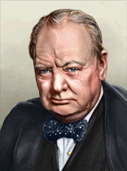 |
温斯顿·丘吉尔 | 保守党 | 英国斗牛犬 |
|
|
保守主义 |
爱德华·哈利法克斯勋爵 | 保守党 | Viceroy Emeritus Cautious Arbiter |
|
| |
保守主义 |
垮台的政府 | 保守党 | 内阁危机 |
|
| |
社会主义 |
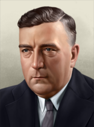 |
罗伯特·孟席斯 | 保守党 | – | – |
|
列宁主义 |
哈里·波利特 | Communist Party of Great Britain | 坚定的斯大林主义者 |
|
起始共产主义领袖 | |
列宁主义 |
拉贾尼·帕尔梅·杜特 | Communist Party of Great Britain | Comintern Workhorse |
|
| |
法西斯主义 |
奥斯瓦尔德·莫斯利 | 英国法西斯联盟 | Champion of Peace 经济改革者 |
|
起始法西斯领袖 | |
中间主义 |
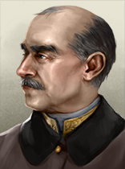 |
霍雷肖·邓达斯 | the House of Windsor | 军需总监 仁慈绅士 |
|
起始中立制领袖 |
Despotism |
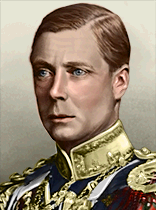 |
爱德华八世 | the King's Party | 缺乏经验的帝国主义者 |
|
|
Despotism |
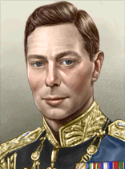 |
乔治六世 | the King's Party | 受拥戴的傀儡领袖 Stammer Humble |
|
|
Despotism |
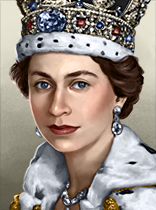 |
伊丽莎白二世 | the Queen's Party | Inexperienced Monarch Headstrong Popular Queen |
|
|
The Commonwealth
The United Kingdom maintains close ties with the Commonwealth countries of  加拿大,
加拿大,  南非,
南非,  澳大利亚和
澳大利亚和 新西兰. These 国家 were formerly part of the British Empire, but are now independent Dominions under the British Crown. They have their own governments, economies and armed forces. Certain UK focus choices affect them (e.g., construction of factories).
新西兰. These 国家 were formerly part of the British Empire, but are now independent Dominions under the British Crown. They have their own governments, economies and armed forces. Certain UK focus choices affect them (e.g., construction of factories).
傀儡国
Their colony of India has some local autonomy. It is represented in the game as a 傀儡国 called  英属印度. It is possible for the UK to release British Raj as an independent country. The colony of
英属印度. It is possible for the UK to release British Raj as an independent country. The colony of  英属马来亚 is also represented as a puppet under Britain. India is represented as a Colony, more autonomous than a puppet, while Malaya is represented as an Integrated Puppet, which is less autonomous than a puppet. The same fate is shared with
英属马来亚 is also represented as a puppet under Britain. India is represented as a Colony, more autonomous than a puppet, while Malaya is represented as an Integrated Puppet, which is less autonomous than a puppet. The same fate is shared with  科威特酋长国和
科威特酋长国和 英属巴勒斯坦托管地. Whereas the colonies of
英属巴勒斯坦托管地. Whereas the colonies of  英属缅甸 and the
英属缅甸 and the  马斯喀特和阿曼苏丹国 are represented as a colony. Last but not least, the
马斯喀特和阿曼苏丹国 are represented as a colony. Last but not least, the  外约旦酋长国 is in the same dominion level as the Commonwealth countries.
外约旦酋长国 is in the same dominion level as the Commonwealth countries.
Colonies
The UK starts with direct control over many colonies across the world. These include the strategic locations of Gibraltar and the Suez Canal.
The Allies
The UK is leader of the faction called the Allies. The faction's starting members are the Commonwealth countries (Canada, South Africa, Australia, and New Zealand) and the British Raj and British Malaya. It's the most powerful faction in the game in the start.
The UK has very friendly relations with France, but the latter isn't a member of the Allies in start, nor is the United States. France normally joins the faction early in the game, but it might not — its National Focuses could steer it elsewhere. The U.S. normally joins the Allies later, but it can also form its own faction.
In terms of cores, aside from the ones that are granted as a result of the Imperial Federation, the UK can also gain cores on Ireland if it goes either Fascist or Monarchist, as well as temporarily gain cores on all potential French cores through the Franco-British Union (it will only keep French cores as long as the UK is at war; if the UK is at peace, the UK can opt to keep the Union formed, but it will lose all French cores regardless of if it agrees to let France become independent or if it keeps the Union in place). Additionally, if either New Zealand or South Africa were to form either Polynesia or Mutapa, the UK would also gain those additional cores (New Zealand can form Polynesia even if it is a dominion, but Mutapa can only be formed if South Africa is independent, thus meaning that the UK likely won't be able to gain Mutapan cores unless either South Africa goes Fascist/Communist or the UK goes down a non-Democratic branch of it's focus tree). If the UK goes Fascist, after forming the Imperial Federation, the UK can also form the European Union if it conquers the required territories in mainland Europe.
The UK starts as a signatory of the naval treaty - while the UK is not restricted by the number of capital ships, it is still restricted by the limits on the cost of ships, which gives them slightly more versatility than other countries.
| Rule | Whether it applies | Reason |
|---|---|---|
| Can declare war on country of the same ideology group without a war goal | No | 民主主义 |
| Can Guarantee other Ideologies | 是 | 民主主义 |
| Can join Factions led by another Ideology | 是 | 民主主义 |
| Can create Factions | 是 | 国家精神 |
| 通过保障独立降低世界紧张度 | 是 | 民主主义 |
| 可将一个国家变为傀儡国 | No | 民主主义 |
| Can justify war goals against a country that has not generated world tension | No | 民主主义 |
英国 的部长与军事幕僚。
的部长与军事幕僚。
| 肖像 | 名称 | 特质 | 效果 | 要求 | 花费（） |
|---|---|---|---|---|---|
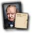 |
温斯顿·丘吉尔 | Royalist Bulldog |
|
150 | |
| 奥斯瓦尔德·莫斯利 | 经济改革者 |
|
|
150 | |
| 哈里·波利特 | 共产主义革命者 |
|
150 | ||
| Clement Attlee | 民主改革者 |
|
|
150 | |
| John Beckett | 法西斯煽动家 |
|
150 | ||
| Philip Kerr | 沉默的实干家 |
|
|
150 | |
| Nevile Henderson | 幕后暗算者 |
|
– | 150 | |
| Maxwell Aitken | 军工实业家 | – | 150 | ||
| Leslie Hore-Belisha | 军备组织者 | – | 150 | ||
| Ernest Bevin | 军需总监 | – | 150 | ||
| Mary Sophia Allen | Princess of Terror |
|
|
150 | |
| George Orwell | Socialist Novelist |
|
150 | ||
| Sylvia Pankhurst | 红色女权参政者 |
|
|
150 | |
| David Lloyd George | Old Figurehead |
|
|
150 | |
| Stewart Menzies | 神秘绅士 |
|
|
150 | |
| Alan Turing | Mastermind Codebreaker |
|
|
150 |
| 肖像 | 名称 | 特质 | 效果 | 要求 | 花费（） |
|---|---|---|---|---|---|
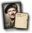 |
伯纳德·蒙哥马利 | 大战略专家 |
|
|
150 |
| 哈罗德·亚历山大 | 军事理论家 |
|
|
100 | |

|
雷蒙德·布里格斯 | 军事理论家 |
|
显示条件：
|
100 |
| 詹姆斯·萨默维尔 | 大舰队倡导者 |
|
|
150 | |
| 汤姆·菲利普斯 | 海军理论家 |
|
100 | ||
| 休·道丁 | 空战理论家 |
|
100 | ||
| 阿瑟·哈里斯 | 空权制胜 |
|
150 | ||

|
J.F.C. 富勒 | 闪电战理论家 |
|
|
200 |
| 肖像 | 名称 | 特质 | 效果 | 要求 | 花费（） |
|---|---|---|---|---|---|
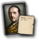 |
Alan Brooke | Army Maneuver (Genius) |
|
|
200 |
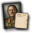 |
John Vereker | 陆军进攻（专家） |
|
|
100 |
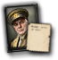 |
Edmund Ironside | 陆军防御（专家） |
|
– | 100 |
| 肖像 | 名称 | 特质 | 效果 | 要求 | 花费（） |
|---|---|---|---|---|---|
| Andrew Cunningham | 海军航空（专家） |
|
– | 100 | |
| Ernle Chatfield | 海军机动（专家） |
|
– | 100 | |
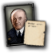 |
Dudley Pound | 决战（专精） |
|
– | 50 |
| 肖像 | 名称 | 特质 | 效果 | 要求 | 花费（） |
|---|---|---|---|---|---|
| Cyril Newall | 空军改革者（专家） | – | 100 | ||
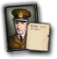 |
Charles Portal | 夜间作战（专家） |
|
– | 100 |
| Edward Ellington | 航空安全（专家） |
|
– | 100 |
| 肖像 | 名称 | 特质 | 效果 | 要求 | 花费（） |
|---|---|---|---|---|---|
| Claude Auchinleck | 陆军后勤（专家） |
|
– | 100 | |
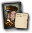 |
Archibald Wavell | 陆军重整（专家） |
|
|
100 |
| Henry Harwood | 屏卫舰（专家） |
|
– | 100 | |
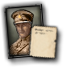 |
Kenneth Anderson | 步兵（专家） |
|
– | 100 |
| Sholto Douglas | 制空（专家） |
|
– | 100 | |
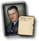 |
Trafford Leigh-Mallory | 轰炸机拦截（专家） |
|
– | 100 |
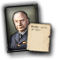 |
Frederick Bowhill | 海军打击（专家） |
|
– | 100 |
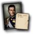 |
路易斯·蒙巴顿 | Amphibious Assault (Genius) |
|
|
200 |
| Max Horton | 潜艇（专家） |
|
– | 100 | |
| David Stirling | Commando (Genius) |
|
|
200 |
| 肖像 | 名称 | 特质 | 要求 | |||||
|---|---|---|---|---|---|---|---|---|
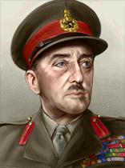 |
Alan Brooke | 5 | 3 | 5 | 5 | 3 |
| |
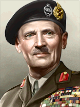 |
伯纳德·蒙哥马利 | 4 | 3 | 5 | 3 | 5 |
|
| 肖像 | 名称 | 特质 | 要求 | |||||
|---|---|---|---|---|---|---|---|---|
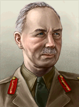 |
Alan Cunningham | 4 | 4 | 1 | 4 | 4 | – | |
| Archibald Wavell | 4 | 4 | 2 | 3 | 4 |
| ||
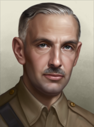 |
Arthur Percival | 2 | 2 | 2 | 2 | 1 | – | |
| Brian Horrocks | 3 | 1 | 3 | 3 | 3 | – | ||
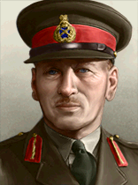 |
Claude Auchinleck | 5 | 3 | 6 | 3 | 6 | – | |
| Douglas Gracey | 3 | 1 | 3 | 3 | 3 |
| ||
| Frank Messervy | 2 | 2 | 1 | 2 | 2 |
| ||
| George Giffard | 3 | 2 | 2 | 3 | 3 | – | ||
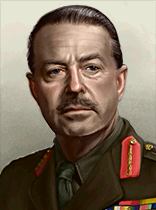 |
哈罗德·亚历山大 | 5 | 4 | 4 | 3 | 5 |
| |
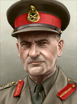 |
Henry Pownall | 2 | 1 | 2 | 2 | 2 | – | |
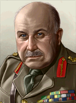 |
Henry Wilson | 4 | 2 | 4 | 4 | 3 | – | |
| Jack Churchill | 1 | 1 | 1 | 1 | 1 | – | ||
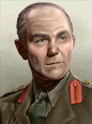 |
Jackie Smyth | 1 | 1 | 1 | 1 | 1 | – | |
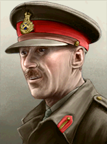 |
Jock Campbell | 4 | 4 | 3 | 2 | 4 | – | |
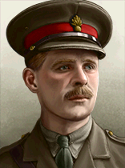 |
John Vereker | 4 | 3 | 3 | 4 | 3 |
| |
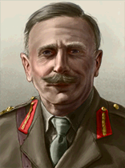 |
Merton Beckwith-Smith | 1 | 1 | 1 | 1 | 1 | – | |
| Miles Dempsey | 4 | 4 | 4 | 5 | 2 | – | ||
| Montagu Stopford | 3 | 3 | 4 | 1 | 3 |
| ||
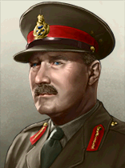 |
Neil Ritchie | 4 | 3 | 5 | 3 | 4 | – | |
| Noel Beresford-Peirse | 3 | 3 | 3 | 3 | 1 |
| ||
| Oliver Leese | 4 | 5 | 2 | 3 | 4 |
| ||
| Richard O'Connor | 4 | 2 | 4 | 4 | 3 | – | ||
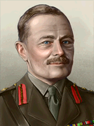 |
Thomas Jacomb Hutton | 2 | 2 | 2 | 2 | 1 | – | |
| Tom Moore | 1 | 1 | 1 | 2 | 1 | – | ||
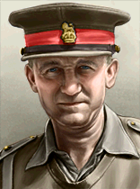 |
William Gott | 3 | 2 | 4 | 2 | 4 | – | |
| William Platt | 3 | 2 | 2 | 3 | 3 | – | ||
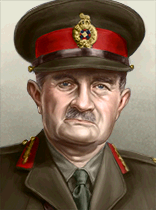 |
William Slim | 5 | 3 | 3 | 5 | 5 | – |
| 肖像 | 名称 | MNV |
COR |
特质 | 要求 | |||
|---|---|---|---|---|---|---|---|---|
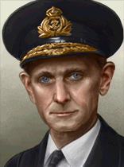 |
Algernon Willis | 3 | 3 | 2 | 3 | 2 | – | |
| Andrew Cunningham | 5 | 5 | 4 | 3 | 4 | – | ||
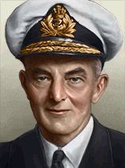 |
Arthur Power | 2 | 3 | 1 | 1 | 2 | – | |
| Bernard Rawlings | 3 | 3 | 2 | 3 | 2 |
| ||
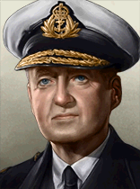 |
Bruce Fraser | 4 | 3 | 2 | 4 | 4 | – | |
| Charles Forbes | 3 | 3 | 2 | 2 | 3 | – | ||
| Henry Harwood | 3 | 3 | 2 | 3 | 2 |
| ||
| James Fownes Somerville | 5 | 4 | 3 | 4 | 5 |
| ||
| John Cunningham | 4 | 2 | 4 | 4 | 3 | – | ||
| John Tovey | 4 | 3 | 3 | 2 | 5 |
|
| 标志 | 名称 | 类型 | 效果 | 要求 | 花费（） |
|---|---|---|---|---|---|

|
AIOC | 工业财团 | – | 150 | |

|
English Electric | 电子学财团 |
|
– | 150 |
英国 的设计公司。
的设计公司。
| 标志 | 名称 | 类型 | 效果 | 要求 | 花费（） |
|---|---|---|---|---|---|
| Vickers-Armstrong | 中型坦克设计商 |
选择此设计公司后，只要它仍在受雇，就会永久影响其受雇期间研究的所有装备的性能。 |
– | 150 |
| 标志 | 名称 | 类型 | 效果 | 要求 | 花费（） |
|---|---|---|---|---|---|
| 亚罗造船 | 护航舰队设计商 |
选择此设计公司后，只要它仍在受雇，就会永久影响其受雇期间研究的所有装备的性能。 |
– | 150 | |
| 哈兰德与沃尔夫 | 太平洋舰队设计商 |
选择此设计公司后，只要它仍在受雇，就会永久影响其受雇期间研究的所有装备的性能。 |
– | 150 | |
| 卡梅尔·莱尔德 | 大西洋舰队设计商 |
选择此设计公司后，只要它仍在受雇，就会永久影响其受雇期间研究的所有装备的性能。 |
– | 150 | |
| 约翰·布朗公司 | 近海防御舰队设计商 |
选择此设计公司后，只要它仍在受雇，就会永久影响其受雇期间研究的所有装备的性能。 |
– | 150 |
| 标志 | 名称 | 类型 | 效果 | 要求 | 花费（） |
|---|---|---|---|---|---|
| Supermarine | 轻型飞机设计商 |
选择此设计公司后，只要它仍在受雇，就会永久影响其受雇期间研究的所有装备的性能。 |
– | 150 | |
| 霍克飞机 | 近距空中支援设计商 |
选择此设计公司后，只要它仍在受雇，就会永久影响其受雇期间研究的所有装备的性能。 |
– | 150 | |

|
德哈维兰 | 中型飞机设计商 |
选择此设计公司后，只要它仍在受雇，就会永久影响其受雇期间研究的所有装备的性能。 |
– | 150 |
| Avro | 重型飞机设计商 |
选择此设计公司后，只要它仍在受雇，就会永久影响其受雇期间研究的所有装备的性能。 |
– | 150 | |
| 费尔雷航空 | 海军飞机设计商 |
选择此设计公司后，只要它仍在受雇，就会永久影响其受雇期间研究的所有装备的性能。 |
– | 150 |
| 标志 | 名称 | 类型 | 效果 | 要求 | 花费（） |
|---|---|---|---|---|---|
| RSAF Enfield | 步兵装备设计商 |
|
– | 150 | |

|
Vauxhall | 摩托化装备设计商 |
|
– | 150 |
| Royal Arsenal | 火炮设计商 |
|
– | 150 |
 英国 可使用这些军工产业组织。
英国 可使用这些军工产业组织。
| ||||||||||||||||||||||||||||||||||||||||||||||||||||||||||||||||||||||||||||||||||||||||||||||||||||||||||||||||||||||||||||||||||||||||||||||||||||
| ||||||||||||||||||||||||||||||||||||||||||||||||||||||||||||||||||||||||||||||||||||||||||||||||||||||||||||||||||||||||||||||||||||||||||||||||||||||||||||||||||||||||||||||||||||||||||||||||||||||||||||||||||||||||||||||||||||||||||||||||||||||||||||||||||||||||||||||||||||||||||||
| ||||||||||||||||||||||||||||||||||||||||||||||||||||||||||||||||||||||||||||||||||||||||||||||||||||||||||||||||||||||||||||||||||||||||||||||||||||||||||||||||||||||||||||||||||||||||||||||||||||||||||||||||||||||||||||||||||||||||||||||||||||||||||||||||||||||||||||||||||||||||||||||||||||||||||||||||||||||||||||||||||||||||||||||||||||||||||||||||||||||
| ||||||||||||||||||||||||||||||||||||||||||||||||||||||||||||||||||||||||||||||||||||||||||||||||||||||||||||||||||||||||||||||||||||||||||||||||||||||||||||||||||||||||||||||||||||||||||||||||||||||||||||||||||||||||||||||||||||||||||||||||||||||||||||||||||||||||||||||||||||
英国 开局拥有以下法令：
开局拥有以下法令：
1936
| 征兵法案 | 贸易法案 | 经济法令 |
|---|---|---|
|
|
|
1939
| 征兵法案 | 贸易法案 | 经济法令 |
|---|---|---|
|
|
|
The  英国 has a moderately sized civilian and military industry, but has one of the largest naval industries in the world. There is also plenty of territory for 建造 of new factories.
英国 has a moderately sized civilian and military industry, but has one of the largest naval industries in the world. There is also plenty of territory for 建造 of new factories.
年份 |
军用工厂 |
海军船坞 |
民用工厂 |
燃料筒仓 |
Refineries |
建筑槽位 |
|---|---|---|---|---|---|---|
| 1936 | 14 | 19 | 31 (-13) | 1 | 0 | 197 |
*红色 中的数字表示生产消费品所需的民用工厂数量，依据经济法案以及军用与民用工厂总数向上取整。
年份 |
石油 |
铝 |
橡胶 |
钨 |
钢铁 |
铬 |
煤 |
|---|---|---|---|---|---|---|---|
| 1936 | 82* (-41) | 126 (-63) | 94 (-47) | 99 (-49) | 478 (-239) | 166 (-83) | 408 (-204) |
*这些数字表示游戏开始一小时后可用的资源量。红色 中的数字表示因贸易法案而留作出口的资源量。
*The UK gets half of  墨西哥's
墨西哥's  石油, and with
石油, and with  博斯普鲁斯之战, it gets all of
博斯普鲁斯之战, it gets all of  伊拉克's.
伊拉克's.
The  英国 has good access to all resources. Many resources come from overseas colonies, so ensuring that the Royal Navy has superiority along the trade routes is of importance to ensure that these make their way to Britain.
英国 has good access to all resources. Many resources come from overseas colonies, so ensuring that the Royal Navy has superiority along the trade routes is of importance to ensure that these make their way to Britain.
The  英国 starts with a world-dominating fleet across the globe, and a sizable air force. Its army is stretched thin across its vast empire.
英国 starts with a world-dominating fleet across the globe, and a sizable air force. Its army is stretched thin across its vast empire.
| 类型 | # 1936 | # 1939 | |
|---|---|---|---|
| 步兵 | 32 | 41 | |
| 骑兵 | 3 | 2 | |
| 摩托化步兵 | 0 | 6 | |
| 轻型坦克 | 1 | 8 | |
| 装甲车 | 2 | 0 | |
| 师总数 | 38 | 57 | |
| 已用人力 | 269.60K | 419.10K |
Most of the British Army's forces are concentrated in England, Wales, and Scotland, with the remainder in small garrison units around their colonies. The British Army is expected to be hard pressed from the extent of territory that needs to be defended when war breaks out.
| 师 | 名称列表 | # 1936 | # 1939 | 支援连 | 战斗营 |
|---|---|---|---|---|---|
| 步兵师 | 16 | 0 | 9x | ||
| 步兵师 | 0 | 23 | 9x | ||
| Cavalry Brigade | 3 | 0 | 4x | ||
| Cavalry Brigade | 0 | 2 | 3x | ||
| 坦克旅 | 1 | 6 | 3x | ||
| Motorised Division | 0 | 6 | 6x | ||
| Armored Car Division | 2 | 0 | 4x | ||
| Colonial Division | 16 | 16 | 6x | ||
| 步兵师 | 0 | 2 | 6x | ||
| Armoured Division | 0 | 2 | 2x | ||
| * 标记的是在 1939 年开局中被移除的师。 ^ 标记仅存在于 1939 年开局中的师。 | |||||
| 类型 | Chassis | Role | 主武器 | Turret | Suspension | 装甲(等级) | 发动机（等级） | 特殊模块 |
|---|---|---|---|---|---|---|---|---|
| Matilda I*^ | 改进型轻型 | 轻型坦克 | 重机枪 | 单人 | Bogie | Riveted (6) | 汽油（2） | |
| Matilda II^ | 基础型重型坦克 | 重型坦克 | 改进型小型机炮 | 三人制 | Bogie | Cast (8) | Diesel (4) | 基础无线电、烟雾发射器 |
| Cruiser Mk. I*^ | 基础中型 | 中型坦克 | 改进型小型机炮 | 三人制 | Bogie | 铆接（1） | 汽油（3） | 基础无线电、2x 重机枪 |
| Cruiser Mk. IV^ | 基础中型 | 中型坦克 | 改进型小型机炮 | 三人制 | Christie | 铆接（3） | Gasoline (7) | 基础无线电、烟雾发射器 |
| Light Tank Mk. IV* | 基础轻型 | 轻型坦克 | 重机枪 | 单人 | Christie | 铆接（1） | 汽油（2） | |
| Light Tank Mk. VI | 基础轻型 | 轻型坦克 | 重机枪 | 双人 | Bogie | 铆接（2） | 汽油（2） | 基础无线电、烟雾发射器 |
| Medium Mk. II | 战间期中型 | 中型坦克 | 小型火炮 | 三人制 | Bogie | 铆接（1） | 汽油（2） | 基础无线电 |
| Vickers 6 ton A* | 战间期轻型 | 轻型坦克 | 重机枪 | 单人 | Bogie | 铆接（3） | 汽油（2） | 重机枪 |
| Vickers 6 ton B* | 战间期轻型 | 轻型坦克 | 小型火炮 | 双人 | Bogie | 铆接（3） | 汽油（2） | |
| * 表示某个变体已「过时」。 ^ 标记仅存在于 1939 年开局中的变体。 | ||||||||
| 类型 | # 1936 | # 1939 | |
|---|---|---|---|
| 航空母舰 | 5 | 6 | |
| 战列巡洋舰 | 3 | ||
| 战列舰 | 12 | ||
| 重巡洋舰 | 18 | ||
| 轻巡洋舰 | 31 | 41 | |
| 驱逐舰 | 128 | 172 | |
| 潜艇 | 42 | 58 | |
| 运输船队 | 1000 | 1200 | |
| 舰船总数 | 239 | 310 | |
| 已用人力 | 154.30K | 185.95K | |
The Royal Navy is the largest on the globe by 1936.
| 类型 | Class | Hull | 发动机 | # 1936 | # 1939 | 设计说明 | ||
|---|---|---|---|---|---|---|---|---|
| CV | Ark Royal | 基础型航空母舰 | 航空母舰 II | 1 | 1 | 3x Hangar Space, Dual-Purpose Secondary Battery II, Anti-Air I | ||
| CV | Courageous* | 改装战列舰 | 重型 II | 3 | 3 | 3x Hangar Space, Dual-Purpose Secondary Battery I, Anti-Air I | ||
| CV | Eagle* | 改装战列舰 | 重型 I | 1 | 1 | 2x Hangar Space, Dual-Purpose Secondary Battery I, Anti-Air I | ||
| CV | Hermes* | 改装巡洋舰 | 巡洋舰 I | 1 | 1 | Hangar Space, Secondary Battery I, Anti-Air I | ||
| CV | Illustrious^ | Improved Carrier | 航空母舰 II | 2 | 3x Hangar Space, Dual-Purpose Secondary Battery II, Anti-Air I, Carrier Deck Armor | |||
| BB | Nelson* | 早期重型舰船 | 重型 I | 2 | 2 | 2x Heavy Battery II, Dual-Purpose Secondary Battery I, Secondary Battery II, Anti-Air I, Fire Control I, Battleship Armor II | ||
| BB | Queen Elizabeth* | 早期重型舰船 | 重型 I | 5 | 5 | 2x Heavy Battery I, Dual-Purpose Secondary Battery I, Secondary Battery I, Anti-Air I, Fire Control I, Battleship Armor I, Floatplane Catapult I | ||
| BB | Revenge* | 早期重型舰船 | 重型 I | 5 | 5 | 2x Heavy Battery I, 2x Secondary Battery I, Anti-Air I, Fire Control I, Battleship Armor I | ||
| BB | G3 Design | 早期重型舰船 | 重型 II | 2x Heavy Battery II, Dual-Purpose Secondary Battery I, Secondary Battery II, 2x Anti-Air I, Fire Control I, Battlecruiser Armor II | ||||
| BB | King George V^ | 基础型重型舰船 | 重型 II | 2 | 2x Heavy Battery II, 2x Dual-Purpose Secondary Battery III, 2x Anti-Air II, Fire Control II, Battleship Armor II, Floatplane Catapult I, Radar II | |||
| BB | Lion | 基础型重型舰船 | 重型 II | 2x Heavy Battery III, 2x Dual-Purpose Secondary Battery III, Anti-Air I, Anti-Air II, Fire Control II, Battleship Armor II, Floatplane Catapult I | ||||
| BC | 海军上将 | 早期重型舰船 | 重型 II | 1 | 1 | 2x Heavy Battery I, Dual-Purpose Secondary Battery II, Secondary Battery I, 2x Anti-Air I, Fire Control I, Battlecruiser Armor II | ||
| BC | Renown* | 早期重型舰船 | 重型 II | 2 | 2 | Heavy Battery I, Dual-Purpose Secondary Battery II, Secondary Battery I, 2x Anti-Air I, Fire Control I, Battlecruiser Armor I, Floatplane Catapult I | ||
| CA | Erebus* | 岸防舰 | 巡洋舰 I | 2 | 2 | Heavy Battery I, Secondary Battery I, Anti-Air II, Fire Control I, Cruiser Armor II | ||
| CA | County | 基础巡洋舰 | 巡洋舰 II | 13 | 13 | 2x Medium Battery II, Dual-Purpose Secondary Battery I, Anti-Air I, Fire Control 0, Cruiser Armor I, Torpedo Launcher I, Floatplane Catapult I | ||
| CA | Hawkins* | 基础巡洋舰 | 巡洋舰 I | 3 | 3 | Medium Battery I, Secondary Battery I, Anti-Air II, Fire Control 0, Cruiser Armor I, Torpedo Launcher I | ||
| CA | York | 基础巡洋舰 | 巡洋舰 II | Medium Battery II, Dual-Purpose Secondary Battery I, Anti-Air I, Fire Control 0, Cruiser Armor I, Torpedo Launcher I, Floatplane Catapult I | ||||
| CL | Adventure | 早期巡洋舰 | 巡洋舰 I | 1 | 1 | Light Cruiser Battery I, Dual-Purpose Secondary Battery II, Anti-Air I, Fire Control 0, 3x Minelaying Rails | ||
| CL | C-Class* | 早期巡洋舰 | 巡洋舰 I | 13 | 13 | Light Cruiser Battery I, Dual-Purpose Secondary Battery I, Fire Control 0, Cruiser Armor I, Torpedo Launcher I | ||
| CL | Danae* | 早期巡洋舰 | 巡洋舰 I | 8 | 8 | Light Cruiser Battery I, Anti-Air I, Fire Control 0, Cruiser Armor I, 2x Torpedo Launcher I | ||
| CL | Emerald* | 基础巡洋舰 | 巡洋舰 II | 5 | 2x Light Cruiser Battery I, Dual-Purpose Secondary Battery I, Anti-Air I, Fire Control 0, Cruiser Armor I, 2x Torpedo Launcher I | |||
| CL | Leander | 基础巡洋舰 | 巡洋舰 II | 4 | 4 | 4 | 2x Light Cruiser Battery II, Dual-Purpose Secondary Battery I, Anti-Air II, Fire Control 0, Cruiser Armor I, Torpedo Launcher I, Floatplane Catapult I | |
| CL | Town | 基础巡洋舰 | 巡洋舰 II | 5 | 10 | 2x Light Cruiser Battery II, Dual-Purpose Secondary Battery II, Secondary Battery II, 2x Anti-Air II, Fire Control 0, Cruiser Armor II, Torpedo Launcher I | ||
| CL | Crown Colony^ | 改进型巡洋舰 | 巡洋舰 II | 5 | 4 | 2x Light Cruiser Battery II, Dual-Purpose Secondary Battery II, 3x Anti-Air I, Fire Control I, Cruiser Armor II, Torpedo Launcher I | ||
| CL | Dido^ | 基础巡洋舰 | 巡洋舰 II | 6 | 2x Dual-Purpose Main Battery III, Dual-Purpose Secondary Battery III, 2x Anti-Air I, Fire Control I, Cruiser Armor I, Torpedo Launcher I | |||
| DD | A/B/C/D* | 早期驱逐舰 | 轻型 II | 34 | 29 | Dual-Purpose Main Battery II, Fire Control 0, 2x Torpedo Launcher I, Depth Charge I, Sonar I | ||
| DD | E/F/G/H | 基础驱逐舰 | 轻型 II | 18 | 9 | 45 | 2 | Dual-Purpose Main Battery II, Anti-Air I, Fire Control 0, 2x Torpedo Launcher I, Depth Charge I, Sonar I |
| DD | S* | 早期驱逐舰 | 轻型 I | 10 | 10 | Light Battery I, Fire Control 0, Torpedo Launcher I, Depth Charge I | ||
| DD | V/W* | 早期驱逐舰 | 轻型 I | 66 | 64 | Dual-Purpose Main Battery I, Anti-Air I, Fire Control 0, Torpedo Launcher I, Depth Charge I | ||
| DD | J/K/N^ | 改进型驱逐舰 | 轻型 II | 8 | 8 | Dual-Purpose Main Battery II, Anti-Air I, Fire Control 0, Torpedo Launcher I, Torpedo Launcher II, Depth Charge II, Sonar II | ||
| DD | Tribal^ | 基础驱逐舰 | 轻型 II | 16 | Dual-Purpose Main Battery II, Light Battery II, Anti-Air I, Fire Control 0, Torpedo Launcher I, Depth Charge II, Sonar II | |||
| SS | O/P/R | 早期潜艇 | 潜艇 II | 33 | 33 | 鱼雷发射管 I | ||
| SS | S | 早期潜艇 | 潜艇 I | 9 | 2 | 13 | 2x 鱼雷发射管 I | |
| SS | Grampus^ | 基础潜艇 | 潜艇 II | 5 | 鱼雷发射管 II、布雷管 | |||
| SS | T^ | 基础潜艇 | 潜艇 II | 4 | 5 | 鱼雷发射管 II | ||
| SS | U^ | 早期潜艇 | 潜艇 II | 3 | 鱼雷发射管 II | |||
| * 表示某个变体已「过时」。 ^ 标记仅存在于 1939 年开局中的变体。 舰种术语：
| ||||||||
| 类型 | |||||
|---|---|---|---|---|---|
| 战斗机 | 676 | 814 | |||
| 近距空中支援 | 304 | 546 | 258 | ||
| 海军轰炸机 | 126 | 198 | 126 | ||
| 重型战斗机 | 0 | 168 | |||
| 战术轰炸机 | 240 | 352 | 640 | ||
| 飞机总数 | 1346 | 1346 | 2078 | 2006 | |
| 已用人力 | 31.72K | 31.72K | 51.96K | 56.28K | |
The Royal Air Force (or R.A.F) is the largest air force on the globe by 1936.
| 类型 | 机体 | Role | 主武器 | 副武器 | 发动机 | 特殊模块 |
|---|---|---|---|---|---|---|
| Whitley^ | 战间期中型 | 战术轰炸机 | 中型弹舱 | 2x 发动机 II | 轻型机枪防御炮塔 2x | |
| HP Halifax^ | 基础型大型舰船 | 战略轰炸机 | 大型弹舱 | 大型弹舱 | 4x 引擎 III | Light MG Defense Turret 2x, Light MG Defense Turret, Self-Sealing Fuel Tanks |
| Short Sunderland^ | 基础型大型舰船 | Maritime Patrol Plane | 轻型鱼雷挂架 | 4x 引擎 II | Light MG Defense Turret 2x, Flying Boat Large, Self-Sealing Fuel Tanks | |
| Vickers Wellington^ | 基础中型 | 战术轰炸机 | 中型弹舱 | 中型弹舱 | 2x 发动机 II | 轻型机枪防御炮塔 2x、轻型机枪防御炮塔 |
| HP Hampden^ | 基础中型 | 战术轰炸机 | 中型弹舱 | 轻型鱼雷挂架 | 2x 发动机 II | 轻机枪防御炮塔 |
| Bristol Blenheim IF^ | 基础中型 | 重型战斗机 | 4x 轻机枪 | 2x 发动机 II | 轻机枪防御炮塔 | |
| Fairey Battle^ | 基础小型 | CAS | 小型弹舱 | 炸弹挂锁 | 1x 发动机 II | |
| Supermarine Spitfire^ | 改进型小型 | 战斗机 | 4x 轻机枪 | 4x 轻机枪 | 1x 发动机 II | |
| Hawker Hurricane^ | 基础小型 | 战斗机 | 4x 轻机枪 | 4x 轻机枪 | 1x 发动机 II | |
| Fairey Swordfish^ | 基础型航空母舰 | 海军轰炸机 | 轻型鱼雷挂架 | 1x 发动机 I | ||
| Blackburn Skua^ | 基础型航空母舰 | CAS | 炸弹挂锁 | 4x 轻机枪 | 1x 发动机 II | Dive Brakes, Extra Fuel Tanks |
| Sea Gladiator^ | Inter-War Carrier | 战斗机 | 4x 轻机枪 | 1x 发动机 I | ||
| Bristol Blenheim^ | 基础中型 | 战术轰炸机 | 中型弹舱 | 2x 发动机 II | 轻机枪防御炮塔 | |
| Handley Page Heyford*^ | 战间期中型 | 战术轰炸机 | 中型弹舱 | 2x 引擎 I | ||
| Blackburn Shark^ | Inter-War Carrier | 海军轰炸机 | 轻型鱼雷挂架 | 1x 发动机 I | ||
| Vickers Vildebeest^ | 战间期小型 | 海军轰炸机 | 轻型鱼雷挂架 | 1x 发动机 I | ||
| Fairey Gordon*^ | 战间期小型 | CAS | 炸弹挂锁 | 1x 发动机 I | ||
| Gloster Gladiator^ | 战间期小型 | 战斗机 | 4x 轻机枪 | 1x 发动机 I | ||
| Hawker Nimrod*^ | Inter-War Carrier | 战斗机 | 2x 轻机枪 | 1x 发动机 I | ||
| Hawker Fury*^ | 战间期小型 | 战斗机 | 2x 轻机枪 | 1x 发动机 I | ||
| * 表示某个变体已「过时」。 ^ 标记仅存在于 1939 年开局中的变体。 | ||||||
Some countries can be released by United Kingdom as 傀儡国, without Decolonization Focus. Those are: 巴罗策兰王国, 比亚法拉共和国, 索科托哈里发国.
These puppets will also complete 通用国策树; they would build up themselves, so you could focus industrial efforts at mainland. Releasing them earlier (or immediately) will allow for more build-up - but their templates will be starting ones, meaning crap divisions, what would in turn screw with "Steal manpower" plan. You can duplicate and edit templates of said Puppets - but you need Army Experience for that, and each Puppet has it's own templates.
If you release 巴罗策兰王国, 比亚法拉共和国, 索科托哈里发国, set 占领 everywhere to Local Autonomy and then ask British Raj for garrison support - on 1936 start, you'll go from 303.05K to 670.82K (+367.77 British).
Britain begins the game with an overwhelming naval presence due to her large number of ships and ability to base them nearly anywhere in the world. Because the range of ships is limited to one or two tiles from the nearest naval base, Britain's presence in the Atlantic, Pacific, and Indian Oceans, as well as her presence in the Mediterranean Sea, should not be underestimated. With the exception of Hong Kong and British Malaya, most of these bases are far from historically belligerent powers and relatively unlikely to be attacked, while still providing access to critical shipping lanes such as European trade with South America. Britain's ability to interdict convoy shipping and protect her own in these sectors is considerable; even if she loses Hong Kong and Singapore she can quite easily influence the course of trade and supply the world over. Maintaining control of Hong Kong, Singapore, and the Mediterranean bastions of Malta, Cyprus, and Gibraltar can give Britain a significant advantage in naval basing capabilities, as can maintaining control of the Suez Canal. In addition to the aforementioned points, it is worth noting that Britain can base her ships in any nation of the Commonwealth - even nations that show as different "colors" such as Australia and New Zealand.
Take the King's Party path, and reclaim the Dominions. While you can get them as integrated puppets if you do the uprisings, as New Zealand needs to be a dominion to form Polynesia if it isn't independent, you want it to have more autonomy. Declare on Australia, South Africa, or New Zealand (attacking Canada will get the US involved; you want to hold off on that until after you've gotten Canada under your control); as long as you actively fight each country, you can puppet them during the peace deal (that being said, New Zealand and South Africa can be capitulated easy with 5 and 10 infantry units respectively).
While at war with Canada, take Reclaim the Jewel in the Crown to get war goals on India, Burma, and Pakistan (you'll also get one on Bangladesh if they've spawned). Declare on Burma (if India has White Peaced with Pakistan by this point, declare on India as well) and naval invade Burma (and India) to be able to take them in the peace deal (if Pakistan and Bangladesh are still fighting, leave them alone until after they white peace, as Bangladesh will disband most/all of their forces afterwards).
Then, go to war with the US through Unite the Anglosphere, making sure to call NZ in - by this point, France and Czechoslovakia will be fighting the Axis; this will result in either France inviting the US to the Little Entente, or the US forming a faction with the Phillipines and France and Czechoslovakia joining. Stage naval invasions of either cavalry or motorized divisions across the English Channel, and rush the French victory points. During the peace deal, take all the US states directly and give the required French and US Islands to NZ (Hawaii, Guam, Tahiti are the required states; take the other US and French islands directly and after Polynesia has been formed, return the territory to NZ).
Go after Japan, and in the peace deal, take the remaining required islands (Saipan, Samoa, and the Caroline Islands) - note that you might wanna hold off invading the islands directly, as if you don't generate enough war score, the Chinese will start taking land outside of mainland China (you can circumvent this by joining the Chinese United Front and assuming leadership). Raise NZ's autonomy through lend-lease - if you hold off on taking Imperial Conscription and call them into all the wars, as well as request lend-lease from them, you should be able to get them to the rank of Dominion. Then, take the focus to create the Pan-American State - since NZ is under your control, Hawaii will be transferred to the Dominion after forming it. Then, form the Imperial Federation.
Note, to gain cores on both the 北美自治领 AND  Polynesia as part of the Imperial Federation, one should first form the latter - as the Dominion only requires that Hawaii be under either British control directly or under control of a British subject, NZ should get it first.
Polynesia as part of the Imperial Federation, one should first form the latter - as the Dominion only requires that Hawaii be under either British control directly or under control of a British subject, NZ should get it first.
Fascist Britain has the unique ability to form the European Union in addition to the Imperial Federation, becoming one of the most powerful nations in the entire game.
First, start to position your divisions so you can impose martial law on the Dominions once you flip Fascist. You need to place divisions in your dominion's states so your have enough manpower to impose martial law. The minimum manpower requirements are:
| 自治领 | 州 | Minimum Manpower |
|---|---|---|
| 澳大利亚 | 新南威尔士 (285) | 48,000 |
| 澳大利亚 | Queensland (521) | 19,200 |
| 澳大利亚 | Victoria (517) | 38,400 |
| 澳大利亚 | Western Australia (522) | 9,600 |
| 英属印度 | 阿鲁纳恰尔邦 (434) | 9,600 |
| 英属印度 | 阿萨姆 (432) | 9,600 |
| 英属印度 | 比哈尔 (435) | 9,600 |
| 英属印度 | 孟买 (429) | 9,600 |
| 英属印度 | 中印度 (437) | 9,600 |
| 英属印度 | 中央省 (436) | 9,600 |
| 英属印度 | 德里 (439) | 96,000 |
| 英属印度 | 东孟加拉 (430) | 9,600 |
| 英属印度 | 古吉拉特 (428) | 9,600 |
| 英属印度 | 海得拉巴 (427) | 9,600 |
| 英属印度 | 克什米尔 (441) | 9,600 |
| 英属印度 | 迈索尔 (425) | 9,600 |
| 英属印度 | 北马德拉斯 (424) | 9,600 |
| 英属印度 | 奥里萨 (426) | 9,600 |
| 英属印度 | 白沙瓦 (442) | 9,600 |
| 英属印度 | 拉贾斯坦 (433) | 9,600 |
| 英属印度 | 信德 (443) | 9,600 |
| 英属印度 | 南马德拉斯 (423) | 9,600 |
| 英属印度 | 联合省 (438) | 9,600 |
| 英属印度 | 西孟加拉 (431) | 9,600 |
| 英属印度 | 西旁遮普 (440) | 9,600 |
| 加拿大自治领 | Alberta (470) | 9,600 |
| 加拿大自治领 | 不列颠哥伦比亚 (473) | 9,600 |
| 加拿大自治领 | Manitoba (467) | 9,600 |
| 加拿大自治领 | New Brunswick (465) | 9,600 |
| 加拿大自治领 | Nova Scotia (464) | 9,600 |
| 加拿大自治领 | Saint Lawrence (468) | 28,800 |
| 加拿大自治领 | Saskatchewan (469) | 9,600 |
| 加拿大自治领 | 南安大略 (276) | 48,000 |
| 新西兰 | 坎特伯雷 (723) | 9,600 |
| 新西兰 | 惠灵顿 (284) | 48,000 |
| 南非 | Cape (681) | 19,200 |
| 南非 | Natal (719) | 48,000 |
| 南非 | 德兰士瓦 (275) | 48,000 |
The best way to allocate your troops is to request all forces from all dominions (including Malaya), convert 35 out of the 36 UK divisions to the UK's starting 9-0 infantry template (9,600 manpower), keep one Cavalry Division and put it in Delhi, then train 9 new infantry divisions. This allows you to factor the exact number of troops needed in each state, except for Delhi which is 2,800 manpower over its minimum manpower quota. Then physically place the divisions as follows:
| # | Target TAG | Target State | Source TAG | 师 | 人力 | 备注 |
|---|---|---|---|---|---|---|
| 1 | 澳大利亚 | 新南威尔士 | 澳大利亚 | 骑兵师 | 6,000 | 1st Cavalry Division |
| 2 | 澳大利亚 | 新南威尔士 | 澳大利亚 | 骑兵师 | 6,000 | 2nd Cavalry Division |
| 3 | 澳大利亚 | 新南威尔士 | 英属印度 | District Garrison | 9,000 | Lahore District |
| 4 | 澳大利亚 | 新南威尔士 | 英属印度 | District Garrison | 9,000 | Rawalpindi District |
| 5 | 澳大利亚 | 新南威尔士 | 英属印度 | District Garrison | 9,000 | Kohat District |
| 6 | 澳大利亚 | 新南威尔士 | 英属印度 | District Garrison | 9,000 | Pashawar District |
| 7 | 澳大利亚 | Victoria | 英国 | 步兵师 | 9,600 | Convert at game start |
| 8 | 澳大利亚 | Victoria | 英国 | 步兵师 | 9,600 | Convert at game start |
| 9 | 澳大利亚 | Victoria | 英国 | 步兵师 | 9,600 | Convert at game start |
| 10 | 澳大利亚 | Victoria | 英国 | 步兵师 | 9,600 | Convert at game start |
| 11 | 澳大利亚 | Queensland | 英国 | 步兵师 | 9,600 | Convert at game start |
| 12 | 澳大利亚 | Queensland | 英国 | 步兵师 | 9,600 | Convert at game start |
| 13 | 澳大利亚 | Western Australia | 英国 | 步兵师 | 9,600 | Convert at game start |
| 14 | 英属印度 | 德里 | 澳大利亚 | 步兵师 | 11,000 | 1st Infantry Division |
| 15 | 英属印度 | 德里 | 澳大利亚 | 步兵师 | 11,000 | 2nd Infantry Division |
| 16 | 英属印度 | 德里 | 澳大利亚 | 步兵师 | 11,000 | 3rd Infantry Division |
| 17 | 英属印度 | 德里 | 澳大利亚 | 步兵师 | 11,000 | 4th Infantry Division |
| 18 | 英属印度 | 德里 | 澳大利亚 | 步兵师 | 11,000 | 5th Infantry Division |
| 19 | 英属印度 | 德里 | 加拿大 | District Militia | 9,000 | 5th District Militia |
| 20 | 英属印度 | 德里 | 英国 | 骑兵师 | 3,000 | Convert at game start |
| 21 | 英属印度 | 德里 | 英国 | 步兵师 | 9,600 | Convert at game start |
| 22 | 英属印度 | 德里 | 英国 | 步兵师 | 9,600 | Convert at game start |
| 23 | 英属印度 | 德里 | 英国 | 步兵师 | 9,600 | Convert at game start |
| 24 | 英属印度 | 阿鲁纳恰尔邦 | 英国 | 步兵师 | 9,600 | Convert at game start |
| 25 | 英属印度 | 阿萨姆 | 英国 | 步兵师 | 9,600 | Convert at game start |
| 26 | 英属印度 | 比哈尔 | 英国 | 步兵师 | 9,600 | Convert at game start |
| 27 | 英属印度 | 孟买 | 英国 | 步兵师 | 9,600 | Convert at game start |
| 28 | 英属印度 | Burma | 英国 | 步兵师 | 9,600 | Convert at game start |
| 29 | 英属印度 | 东孟加拉 | 英国 | 步兵师 | 9,600 | Convert at game start |
| 30 | 英属印度 | 古吉拉特 | 英国 | 步兵师 | 9,600 | Convert at game start |
| 31 | 英属印度 | 海得拉巴 | 英国 | 步兵师 | 9,600 | Convert at game start |
| 32 | 英属印度 | Indore | 英国 | 步兵师 | 9,600 | Convert at game start |
| 33 | 英属印度 | Jabalpur | 英国 | 步兵师 | 9,600 | Convert at game start |
| 34 | 英属印度 | 克什米尔 | 英国 | 步兵师 | 9,600 | Convert at game start |
| 35 | 英属印度 | Lucknow | 英国 | 步兵师 | 9,600 | Convert at game start |
| 36 | 英属印度 | Madras | 英国 | 步兵师 | 9,600 | Convert at game start |
| 37 | 英属印度 | Madurai | 英国 | 步兵师 | 9,600 | Convert at game start |
| 38 | 英属印度 | Mandalay | 英国 | 步兵师 | 9,600 | Convert at game start |
| 39 | 英属印度 | 迈索尔 | 英国 | 步兵师 | 9,600 | Convert at game start |
| 40 | 英属印度 | 奥里萨 | 英国 | 步兵师 | 9,600 | Convert at game start |
| 41 | 英属印度 | 白沙瓦 | 英国 | 步兵师 | 9,600 | Convert at game start |
| 42 | 英属印度 | Punjab | 英国 | 步兵师 | 9,600 | Convert at game start |
| 43 | 英属印度 | 拉贾斯坦 | 英国 | 步兵师 | 9,600 | Convert at game start |
| 44 | 英属印度 | 信德 | 英国 | 步兵师 | 9,600 | Convert at game start |
| 45 | 英属印度 | 西孟加拉 | 英国 | 步兵师 | 9,600 | Convert at game start |
| 46 | 加拿大 | 南安大略 | 加拿大 | District Militia | 9,000 | 1st District Militia |
| 47 | 加拿大 | 南安大略 | 加拿大 | District Militia | 9,000 | 2nd District Militia |
| 48 | 加拿大 | 南安大略 | 加拿大 | District Militia | 9,000 | 3rd District Militia |
| 49 | 加拿大 | 南安大略 | 加拿大 | District Militia | 9,000 | 4th District Militia |
| 50 | 加拿大 | 南安大略 | 加拿大 | District Cavalry | 3,000 | 4th District Cavalry |
| 51 | 加拿大 | 南安大略 | 加拿大 | District Cavalry | 3,000 | 10th District Cavalry |
| 52 | 加拿大 | 南安大略 | 加拿大 | District Cavalry | 3,000 | 12th District Cavalry |
| 53 | 加拿大 | 南安大略 | 加拿大 | District Cavalry | 3,000 | 13th District Cavalry |
| 54 | 加拿大 | Saint Lawrence | 英国 | 步兵师 | 9,600 | Train from scratch |
| 55 | 加拿大 | Saint Lawrence | 英国 | 步兵师 | 9,600 | Train from scratch |
| 56 | 加拿大 | Saint Lawrence | 英国 | 步兵师 | 9,600 | Train from scratch |
| 57 | 加拿大 | Alberta | 英国 | 步兵师 | 9,600 | Train from scratch |
| 58 | 加拿大 | 不列颠哥伦比亚 | 英国 | 步兵师 | 9,600 | Train from scratch |
| 59 | 加拿大 | Manitoba | 英国 | 步兵师 | 9,600 | Train from scratch |
| 60 | 加拿大 | New Brunswick | 英国 | 步兵师 | 9,600 | Train from scratch |
| 61 | 加拿大 | Nova Scotia | 英国 | 步兵师 | 9,600 | Train from scratch |
| 62 | 加拿大 | Saskatchewan | 英国 | 步兵师 | 9,600 | Train from scratch |
| 63 | 新西兰 | 北岛 | 英属印度 | District Garrison | 9,000 | Deccan District |
| 64 | 新西兰 | 北岛 | 英属印度 | District Garrison | 9,000 | Bombay District |
| 65 | 新西兰 | 北岛 | 英属印度 | District Garrison | 9,000 | Waziristan District |
| 66 | 新西兰 | 北岛 | 加拿大 | District Cavalry | 3,000 | 2nd District Cavalry |
| 67 | 新西兰 | 北岛 | 新西兰 | District Force | 6,000 | Northern Military District |
| 68 | 新西兰 | 北岛 | 新西兰 | District Force | 6,000 | Central Military District |
| 69 | 新西兰 | 北岛 | 新西兰 | District Force | 6,000 | Southern Military District |
| 70 | 新西兰 | South Island | 英国 | 步兵师 | 9,600 | Convert at game start |
| 71 | 南非 | Natal | 英属印度 | District Garrison | 9,000 | Lucknow District |
| 72 | 南非 | Natal | 英属印度 | District Garrison | 9,000 | Meerut District |
| 73 | 南非 | Natal | 英属印度 | District Garrison | 9,000 | Madras District |
| 74 | 南非 | Natal | 英属印度 | District Garrison | 9,000 | Presidency & Assam District |
| 75 | 南非 | Natal | 南非 | District Brigade | 3,000 | Wiltwatersrand Command |
| 76 | 南非 | Natal | 南非 | District Brigade | 3,000 | Cape Command |
| 77 | 南非 | Natal | 南非 | District Brigade | 3,000 | Natal Command |
| 78 | 南非 | Natal | 英属马来亚 | 步兵旅 | 3,000 | 1st Infantry Brigade |
| 79 | 南非 | 德兰士瓦 | 加拿大 | District Militia | 9,000 | 6th District Militia |
| 80 | 南非 | 德兰士瓦 | 加拿大 | District Militia | 9,000 | 7th District Militia |
| 81 | 南非 | 德兰士瓦 | 加拿大 | District Militia | 9,000 | 10th District Militia |
| 82 | 南非 | 德兰士瓦 | 南非 | District Force | 6,000 | RH-Transvaal Command |
| 83 | 南非 | 德兰士瓦 | 南非 | District Force | 6,000 | Eastern Province Cmd. |
| 84 | 南非 | 德兰士瓦 | 南非 | District Force | 6,000 | Orange Free State Cmd. |
| 85 | 南非 | 德兰士瓦 | 英属马来亚 | 步兵旅 | 3,000 | 2nd Infantry Brigade |
| 86 | 南非 | Cape | 英国 | 步兵师 | 9,600 | Convert at game start |
| 87 | 南非 | Cape | 英国 | 步兵师 | 9,600 | Convert at game start |
If you assign all the divisions correctly, then you should have an army that looks something like:
| Target TAG | 师 | 需要人力 | 已部署人力 |
|---|---|---|---|
| 澳大利亚 | 13 | 115,200 | 115,200 |
| 英属印度 | 32 | 307,200 | 310,000 |
| 加拿大 | 17 | 134,400 | 134,400 |
| 新西兰 | 8 | 57,600 | 57,600 |
| 南非 | 17 | 115,200 | 115,200 |
| 合计 | 87 | 729,600 | 736,000 |
While positioning troops, begin the British path to fascism. Rush "Organize the Blackshirts". In the events, always "Urge Restraint" and denounce Germany to ensure your stability never falls below 50%, or else you will trigger a civil war. Take George VI instead of Edward VIII for the extra stability. Do not hire advisors or designers, save your political power until after you have secured the dominions. As soon as you flip to fascism, rush Secure the Dominions. Once done, spend your political power to impose martial law, propaganda campaigns, and flip each Dominion fascist. At the same time, take God Save the King. If you flip the Dominions fascist, you'll then bypass Ceylon Forward Operating Base, Reclaim the Jewel in the Crown, Appeal to Imperial Loyalists, and Bring the Dominions Back into the Fold. Take or bypass these focuses, conquering any Dominions that broke away. Be careful, if Canada breaks away, 不需要 launch a loyalist uprising to reconquer Canada - this will create a new Canada tag that cannot form the 北美自治领. One these focuses are complete, take Consolidate the British Isles then Unite the Anglosphere, which will grant a war goal on the USA.
Conquer the United States in early 1938, they will go down easily. Naval invade the Philippines just before the USA falls so you can annex them too. Annex all of the continental United States yourself, don't give anything to Canada. Once you've annexed the land, a decision will appear within the next few days to grant all of the USA to Canada, who can core it, if and only if the UK owns every single continental American state and territory. Don't take the decision to grant Canada yet.
Take Down Belgium, the Netherlands, France and the Little Entente
While you're taking down the USA, prepare for war with France. If world tension is over 25% then France will guarantee most nations that you justify on. Justify on the Netherlands, who France will guarantee. Once ready, naval invade the Netherlands. Attack the Dutch East Indies too so you can annex them in the peace deal. Do not call your dominions into the war. Rush the Dutch VPs and they'll go down easily. The moment France joins the war, begin justifying on Belgium. You're fascist, so your time taken to justify will be –80% faster while you're at war with a major (France), make use of it. Declare on Belgium, rush its VPs, then rush on Paris to bring France down. Before France falls, start one last justification on a strategic nation like Turkey or Iraq.
If you are moving quickly, then when you take down France you can also annex the Little Entente: Yugoslavia, Czechoslovakia and Romania. France will form the Little Entente because you're fascist. When you DOW France, their Entente Allies will join France's war against you. When you capitulate France, you can also annex all three Entente nations if you have dealt war score against them - occupation, casualties or strategic bombing. Send an airwing of tactical or strategic bombers to conduct strategic bombing over the Entente airzones as well as naval invade Yugoslavia. If Italy is in your faction, naval invade from Italy. Invade right next to Italy's ports on the Dalmatian coast, even though Italy isn't in the war, their ports can still supply your troops if Italy is in your faction. The naval invasion will guarantee Yugoslavia will be at the peace conference. If a Czech or Romanian division surrounds your naval invasion, attack it even if it's suicidal, you just need to deal causalities against the Czechs and Romanians to get them to the peace conference too.
Once France falls, if you've done all this right then you can directly annex all of France, Belgium, the Netherlands, the Dutch East Indies, Yugoslavia, Czechoslovakia and Romania. If you want the French fleet, then you can reduce them to a single island and puppet them, just like you did for the USA, but note that if you puppet France then Germany will DOW them (and by extension you) via their focus tree. Similarly, if you puppet the Dutch East Indies then Japan will get a war goal via focus on the Dutch East Indies and will declare on you in 1941-42.
You now have a couple of options for what to do next.
Option: Annex the Minors
One option is to annex most of the global minors while Germany (eventually) eats the USSR and Japan takes care of China. If you annexed Czechoslovakia, then Germany will demand the Sudetenland from you - give it to them. If you starting justifying on Turkey before France fell, launch the invasion of Turkey. You will probably annex Turkey just before Germany invades Poland. If so, then the second Germany attacks Poland, begin fabricating on Poland - the Polish justification will take 30 days because they're in a great power war with Germany. As soon as you finish justifying on Poland, DOW Poland and then begin justifying on an out of the way major, which is probably Sweden by this point. Because you're at war with Poland, the justification will take very little time. Once you're finished justifying on Sweden (or a similar major) DOW them but don't invade. You want to keep this war with Sweden going so you can serially justify war goals on minors in under 25 days.
Spend a few years justifying on and invading global minors: Yemen, Saudi Arabia, Oman, Liberia, Bulgaria, Greece, Siam, Spain, Portugal, and all of Central and South America except Mexico, El Salvador, Venezuela, Peru and Paraguay. Mexico you'll get a war goal on via event. Venezuela, El Salvador and Peru are fascist and will join the Axis if you DOW them, Paraguay is Communist and will join the Comintern, so leave them until the very end. Once you're finished with these minors, or want to start the Imperial Conference, naval invade Denmark to get to Sweden. Build ports on the UK side of the Danish peninsula, then naval invade Sweden, or invade Norway and then Sweden, then capitulate them.
Annex Germany
If you're going for Imperial Super Federation, then you need to annex Germany.
One option is to annex Czechoslovakia after you defeat the Little Entente. Germany will demand the Sudetenland from you, deny their request and they will DOW you. Justify on Luxembourg while at war with Germany and DOW them ASAP.
The other option is to wait for Germany to declare on the USSR then stab Germany in the back. The advantage of this approach is that Germany will eat Poland, Luxembourg and the Comintern for you, however, it will delay the formation of the Super Federation. If you go this route, then wait for Germany to DOW the USSR. Lend lease fuel and a few hundred rifles to Germany to help them out. Take a war goal against Germany via your focus tree. Once the USSR is about to capitulate, DOW Germany. If you do this right, Germany will annex the USSR just before you capitulate Germany, saving you the hassle of invading Russia.
Whichever you choose, it helps that you recruit German spies from the game start and prepare collaboration governments before the war with Germany. Start building the spy network for your first prepare collaboration operation about a year before you plan to DOW Germany.
'Option: Annex the USSR"
If you've come this far, then why not go for the One Empire achievement? Assuming you take down Germany early, then you'll need to defeat the Russians yourself. They will demand Bessarabia from you because you annexed Romania. Deny their request. If they don't DOW you over it, then take out a war goal against them via your focus tree. Complete the focus to align Iran and Afghanistan too, the second front from the south really helps.
Preparing for the Imperial Conference
Reduce your Dominions' autonomy to Reichskommissariat. The focus for Imperial Conscription helps. Build lots of convoys and lend-lease them to the Dominions. Build infrastructure and civilian factories in the dominions. Take the continuous focus to reduce subject autonomy if you absolutely need to. Save up ~400-500 political power. Take Indian Autonomy as the last focus before beginning the Imperial Conference. Improve relations with your Dominions up to the maximum, then start the conference.
During the Imperial Federation talks, always go with the option where you spend the most political power. If you gave Canada all of North America, then they're less likely to agree to Imperial Federation here. If the talks succeed in every nation agreeing to federation, then give Canada all of North America. Canada will form the 北美自治领, coring the entire United States, which you will inherit once you complete the final focus, Imperial Federation.
Finally, form the European Union. You already have France, Belgium and the Netherlands. You just need all Italian, German and Luxembourg cores. DOW Germany if you haven't already, then kick Italy from your faction and DOW them. Once you've annexed all the nations you can core the EU states.
To start this branch, the player must first pick the focus A Change In Course. Once you complete this, use your political power to select the Communist Revolutionary as a political advisor. Then begin the Decolonization branch, starting with the Revist Colonial Policy focus. During the times of these focuses, begin moving your soldiers out from your colonies all over the world and bring them back to the Home Islands (i.e the  英国's home territories of England,
英国's home territories of England,  苏格兰,
苏格兰,  威尔士, and
威尔士, and  北爱尔兰 - which you can actually secede to
北爱尔兰 - which you can actually secede to  爱尔兰 if you want to).
爱尔兰 if you want to).
You should have almost all, if not all, of your soldiers back now. Now since  加拿大,
加拿大,  英属印度,
英属印度,  南非,
南非,  新西兰,
新西兰,  澳大利亚, and
澳大利亚, and  英属马来亚 are still your subjects, request control of their forces to boost your army. After this, begin moving your soldiers from your subject nations back to the Home Islands.
英属马来亚 are still your subjects, request control of their forces to boost your army. After this, begin moving your soldiers from your subject nations back to the Home Islands.
Once you complete Revist Colonial Policy, take the focus Guide the Colonies. Once you complete this, continue down the Decolonization branch until it's completed. Then, go to the Communist sub-branch and begin the focus, Concede to the Trade Unions.
You should have almost all, if not all of your soldiers, back by now, since they should be either exiled from your recently decolonized lands or because you brought them back. Once Concede to the Trade Unions is completed, begin
This is the non-aligned branch of the UK focus tree. It focuses on the drama around King Edward VIII, who historically abdicated the throne in December 1936 in order to marry the American divorcée Wallis Simpson. On 23 Jan 1936, King George V will die, losing a 15% stability bonus and replacing it with a ticking weekly decrease in stability. Around 12 Jun 1936, the event "Edward VIII Abdication Crisis" fires. The first choice causes him to abdicate in favor of George VI, while the other two options have him staying in power with either a morganatic or royal marriage. The morganatic option means that the subsequent events will be a little less bad, but it doesn't have any large differences from the royal marriage. Either way, a 200 day countdown starts till the marriage and you will receive various events mostly costing political power and stability, including the collapse of the government. Around November an event will cause the dominions of  加拿大,
加拿大,  澳大利亚,
澳大利亚,  南非, and
南非, and  新西兰 will break free and form the Commonwealth of Nations faction, and
新西兰 will break free and form the Commonwealth of Nations faction, and  英属印度 will also become independent (but not join the Commonwealth of Nations). However, it is possible to regain control of these countries through the focuses unlocked by The King's Party focus, or by going to war with the faction (note that as of 1.19.2, Canada is the faction leader and so the entire faction can be defeated merely by capitulating Canada).
英属印度 will also become independent (but not join the Commonwealth of Nations). However, it is possible to regain control of these countries through the focuses unlocked by The King's Party focus, or by going to war with the faction (note that as of 1.19.2, Canada is the faction leader and so the entire faction can be defeated merely by capitulating Canada).
Around 29 December 1936 (depending on when the player decided on the the marriage event), Edward will finally marry Simpson. This unlocks The King's Party, which puts Edward VIII in charge and activates several good political advisors. The sub-tree Reassess Continental Commitments allows an alliance or a non-interference treaty with  德国 and provides war goals on
德国 and provides war goals on  意大利,
意大利,  苏联, and
苏联, and  日本. The focus God Save the King considerably improves Edward VIII's abilities, while the subsequent focuses Appeal to Imperial Loyalists and Bring the Dominions Back into the Fold let you retake control of the dominions by sparking civil wars. This can be helpful if you want to pursue the Imperial Federation (but take heed of the warning in the Imperial Federation formable nation information). Other focuses give war goals on the wayward colonies
日本. The focus God Save the King considerably improves Edward VIII's abilities, while the subsequent focuses Appeal to Imperial Loyalists and Bring the Dominions Back into the Fold let you retake control of the dominions by sparking civil wars. This can be helpful if you want to pursue the Imperial Federation (but take heed of the warning in the Imperial Federation formable nation information). Other focuses give war goals on the wayward colonies  英属印度和
英属印度和
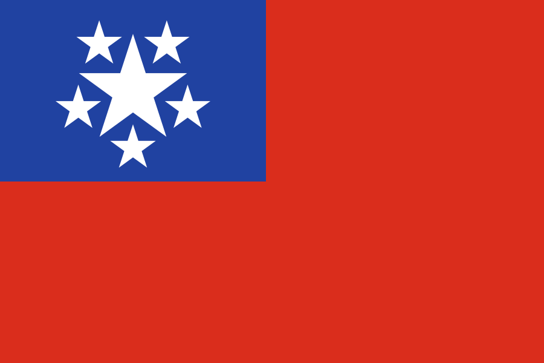
Burma as well as the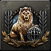
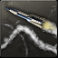
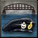
| 西欧 |
|
| 东欧 |
| 西欧 |
|
| 东欧 |
| 苏联 |
|
 克罗斯利汽车
克罗斯利汽车